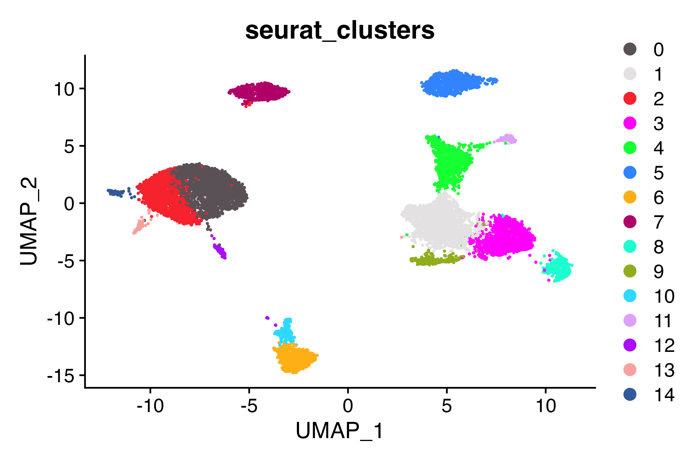
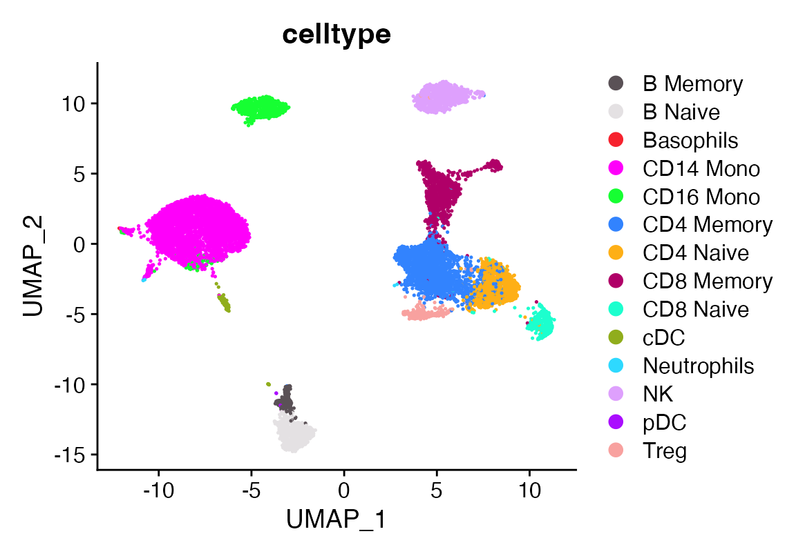
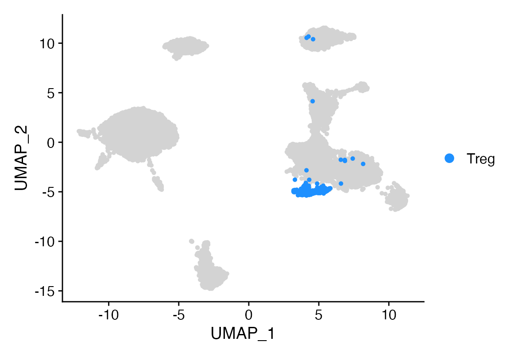
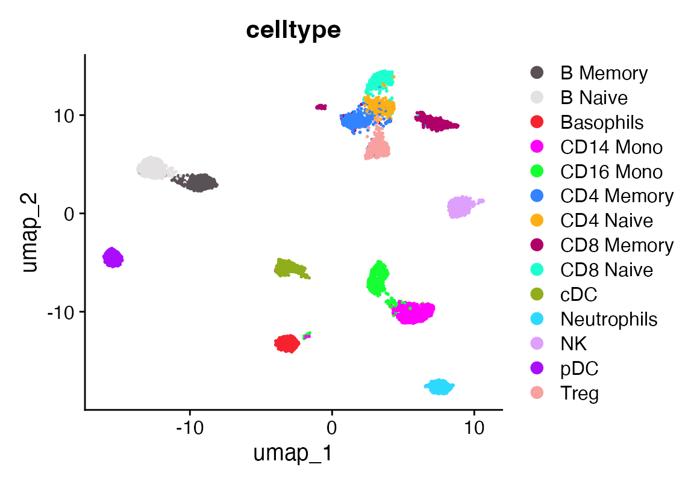
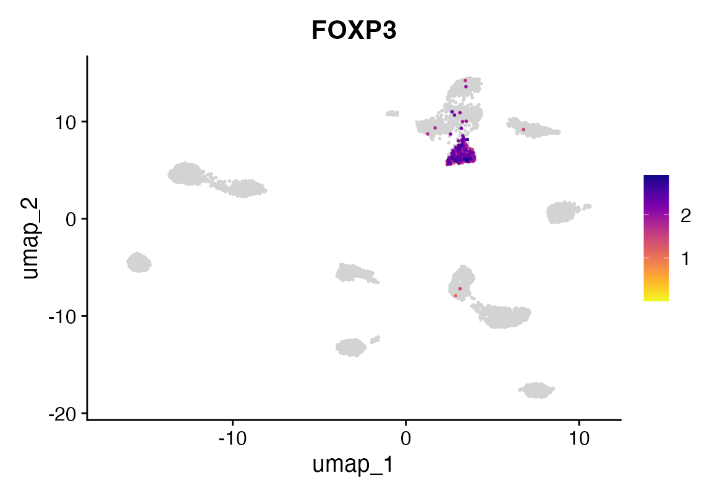
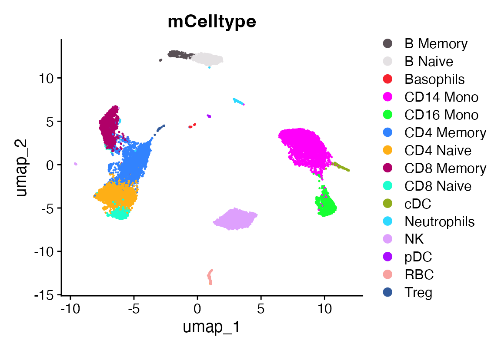
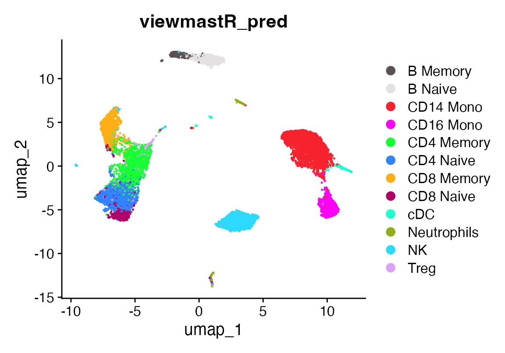
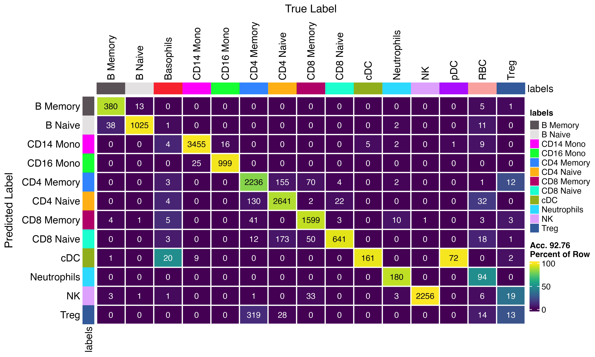
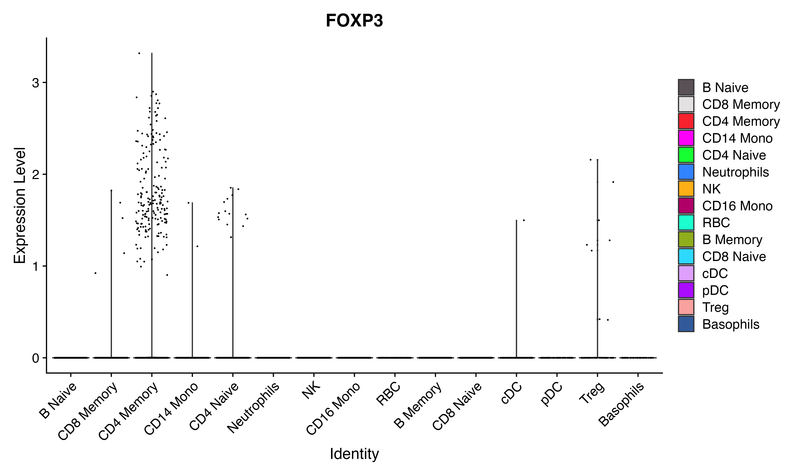

How to augment data using viewmastR
2024-01-23
Augment.RmdInstalling Rust
First you need to have an updated Rust installation. Go to this site to learn how to install Rust.
Installing viewmastR
You will need to have the devtools package installed…
devtools::install_github("furlan-lab/viewmastR")Let’s first fix this dataset and label with Tregs
Tregs are located in cluster 9 (as evidenced by FOXP3 expression), but don’t have the correct label. Let’s fix that.
DimPlot_scCustom(seu, group.by = "celltype")
Idents(seu)<-seu$celltype
Cluster_Highlight_Plot(seu, cluster_name = "Treg")
DimPlot_scCustom(seu, group.by = "seurat_clusters")
FeaturePlot_scCustom(seu, features = "FOXP3")
seu$celltype[seu$seurat_clusters %in% "9"]<-"Treg"
DimPlot_scCustom(seu, group.by = "celltype")
Idents(seu)<-seu$celltype
Cluster_Highlight_Plot(seu, cluster_name = "Treg")
table(seu$celltype)##
## B Memory B Naive Basophils CD14 Mono CD16 Mono CD4 Memory
## 199 666 9 3626 722 2115
## CD4 Naive CD8 Memory CD8 Naive cDC Neutrophils NK
## 1142 1209 388 127 9 843
## pDC Treg
## 3 250Better…
Let’s augment rare celltypes for better learning but bringing any celltype to a minimum of 1500 cells. use the prune option to downsample any celltypes present above the norm_number down to that number.
seuA<-augment_data(seu, "celltype", norm_number = 500, prune = T)
seuA <- FindVariableFeatures(seuA, selection.method = "vst", nfeatures = 3000) %>% NormalizeData() %>% ScaleData()
seuA <- RunPCA(seuA, features = VariableFeatures(object = seuA), npcs = 50)
ElbowPlot(seuA, 50)
seuA<- FindNeighbors(seuA, dims = 1:40) %>% FindClusters(resolution = 2) %>% RunUMAP(dims = 1:40, n.components = 2)## Modularity Optimizer version 1.3.0 by Ludo Waltman and Nees Jan van Eck
##
## Number of nodes: 7000
## Number of edges: 360646
##
## Running Louvain algorithm...
## Maximum modularity in 10 random starts: 0.8510
## Number of communities: 17
## Elapsed time: 0 seconds
DimPlot_scCustom(seuA, group.by = "celltype")
FeaturePlot_scCustom(seuA, features = "FOXP3")
Now we train another PBMC dataset with labels for tregs that are questionable and see if we can find them
seu<-readRDS(file.path(ROOT_DIR3, "240919_5p_seu.RDS"))
seu<-calculate_gene_dispersion(seu)
seu<-select_genes(seu, top_n = 10000, logmean_ul = -1, logmean_ll = -8)
vgq<-get_selected_genes(seu)
seuA<-calculate_gene_dispersion(seuA)
seuA<-select_genes(seuA, top_n = 10000, logmean_ul = -1, logmean_ll = -8)
vgr<-get_selected_genes(seuA)
vg<-intersect(vgq, vgr)
seu<-viewmastR(seu, seuA, ref_celldata_col = "celltype", selected_genes = vg)
DimPlot_scCustom(seu, group.by = "mCelltype")
#need to fix spelling error
#seu$mCelltype[seu$mCelltype=="Jeutrophils"]<-"Neutrophils"
DimPlot_scCustom(seu, group.by = "viewmastR_pred")
A confusion matrix showing prediction vs ground truth
co<-as.character(pals::polychrome(length(levels(factor(c(seu$mCelltype, seu$viewmastR_pred))))))
names(co)<-levels(factor(c(seu$mCelltype, seu$viewmastR_pred)))
confusion_matrix(pred = factor(seu$viewmastR_pred), gt = factor(seu$mCelltype), cols = co)
Idents(seu)<-seu$viewmastR_pred
VlnPlot_scCustom(seu, features = "FOXP3")
Idents(seu)<-seu$mCelltype
VlnPlot_scCustom(seu, features = "FOXP3")
Appendix
## R version 4.4.0 (2024-04-24)
## Platform: x86_64-apple-darwin20
## Running under: macOS Ventura 13.6.7
##
## Matrix products: default
## BLAS: /Library/Frameworks/R.framework/Versions/4.4-x86_64/Resources/lib/libRblas.0.dylib
## LAPACK: /Library/Frameworks/R.framework/Versions/4.4-x86_64/Resources/lib/libRlapack.dylib; LAPACK version 3.12.0
##
## locale:
## [1] en_US.UTF-8/en_US.UTF-8/en_US.UTF-8/C/en_US.UTF-8/en_US.UTF-8
##
## time zone: America/Los_Angeles
## tzcode source: internal
##
## attached base packages:
## [1] stats graphics grDevices utils datasets methods base
##
## other attached packages:
## [1] magrittr_2.0.3 scCustomize_2.1.2 ggplot2_3.5.1 Seurat_5.1.0
## [5] SeuratObject_5.0.2 sp_2.1-4 viewmastR_0.2.3
##
## loaded via a namespace (and not attached):
## [1] fs_1.6.4 matrixStats_1.3.0
## [3] spatstat.sparse_3.0-3 RcppMsgPack_0.2.3
## [5] lubridate_1.9.3 httr_1.4.7
## [7] RColorBrewer_1.1-3 doParallel_1.0.17
## [9] tools_4.4.0 sctransform_0.4.1
## [11] backports_1.5.0 utf8_1.2.4
## [13] R6_2.5.1 lazyeval_0.2.2
## [15] uwot_0.2.2 GetoptLong_1.0.5
## [17] withr_3.0.0 gridExtra_2.3
## [19] progressr_0.14.0 cli_3.6.2
## [21] Biobase_2.64.0 textshaping_0.4.0
## [23] spatstat.explore_3.2-7 fastDummies_1.7.3
## [25] labeling_0.4.3 prismatic_1.1.2
## [27] sass_0.4.9 spatstat.data_3.0-4
## [29] proxy_0.4-27 ggridges_0.5.6
## [31] pbapply_1.7-2 pkgdown_2.0.9
## [33] systemfonts_1.1.0 foreign_0.8-86
## [35] R.utils_2.12.3 dichromat_2.0-0.1
## [37] parallelly_1.37.1 maps_3.4.2
## [39] pals_1.8 rstudioapi_0.16.0
## [41] generics_0.1.3 shape_1.4.6.1
## [43] ica_1.0-3 spatstat.random_3.2-3
## [45] dplyr_1.1.4 Matrix_1.7-0
## [47] ggbeeswarm_0.7.2 fansi_1.0.6
## [49] S4Vectors_0.42.0 abind_1.4-5
## [51] R.methodsS3_1.8.2 lifecycle_1.0.4
## [53] yaml_2.3.8 snakecase_0.11.1
## [55] SummarizedExperiment_1.34.0 recipes_1.1.0
## [57] SparseArray_1.4.8 Rtsne_0.17
## [59] paletteer_1.6.0 grid_4.4.0
## [61] promises_1.3.0 crayon_1.5.2
## [63] miniUI_0.1.1.1 lattice_0.22-6
## [65] cowplot_1.1.3 mapproj_1.2.11
## [67] pillar_1.9.0 knitr_1.46
## [69] ComplexHeatmap_2.20.0 GenomicRanges_1.56.0
## [71] rjson_0.2.21 boot_1.3-30
## [73] future.apply_1.11.2 codetools_0.2-20
## [75] leiden_0.4.3.1 glue_1.7.0
## [77] data.table_1.15.4 vctrs_0.6.5
## [79] png_0.1-8 spam_2.10-0
## [81] gtable_0.3.5 rematch2_2.1.2
## [83] assertthat_0.2.1 cachem_1.1.0
## [85] gower_1.0.1 xfun_0.44
## [87] S4Arrays_1.4.1 mime_0.12
## [89] prodlim_2024.06.25 survival_3.6-4
## [91] timeDate_4041.110 SingleCellExperiment_1.26.0
## [93] iterators_1.0.14 pbmcapply_1.5.1
## [95] hardhat_1.4.0 lava_1.8.0
## [97] fitdistrplus_1.1-11 ROCR_1.0-11
## [99] ipred_0.9-15 nlme_3.1-164
## [101] RcppAnnoy_0.0.22 GenomeInfoDb_1.40.1
## [103] bslib_0.7.0 irlba_2.3.5.1
## [105] vipor_0.4.7 KernSmooth_2.23-24
## [107] rpart_4.1.23 colorspace_2.1-0
## [109] BiocGenerics_0.50.0 Hmisc_5.1-2
## [111] nnet_7.3-19 ggrastr_1.0.2
## [113] tidyselect_1.2.1 compiler_4.4.0
## [115] htmlTable_2.4.2 desc_1.4.3
## [117] DelayedArray_0.30.1 plotly_4.10.4
## [119] checkmate_2.3.1 scales_1.3.0
## [121] lmtest_0.9-40 stringr_1.5.1
## [123] digest_0.6.35 goftest_1.2-3
## [125] spatstat.utils_3.1-0 minqa_1.2.7
## [127] rmarkdown_2.27 XVector_0.44.0
## [129] htmltools_0.5.8.1 pkgconfig_2.0.3
## [131] base64enc_0.1-3 lme4_1.1-35.3
## [133] sparseMatrixStats_1.16.0 MatrixGenerics_1.16.0
## [135] highr_0.10 fastmap_1.2.0
## [137] rlang_1.1.4 GlobalOptions_0.1.2
## [139] htmlwidgets_1.6.4 UCSC.utils_1.0.0
## [141] shiny_1.8.1.1 DelayedMatrixStats_1.26.0
## [143] farver_2.1.2 jquerylib_0.1.4
## [145] zoo_1.8-12 jsonlite_1.8.8
## [147] ModelMetrics_1.2.2.2 R.oo_1.26.0
## [149] Formula_1.2-5 GenomeInfoDbData_1.2.12
## [151] dotCall64_1.1-1 patchwork_1.2.0
## [153] munsell_0.5.1 Rcpp_1.0.12
## [155] reticulate_1.37.0 stringi_1.8.4
## [157] pROC_1.18.5 zlibbioc_1.50.0
## [159] MASS_7.3-60.2 plyr_1.8.9
## [161] parallel_4.4.0 listenv_0.9.1
## [163] ggrepel_0.9.5 forcats_1.0.0
## [165] deldir_2.0-4 splines_4.4.0
## [167] tensor_1.5 circlize_0.4.16
## [169] igraph_2.0.3 spatstat.geom_3.2-9
## [171] RcppHNSW_0.6.0 reshape2_1.4.4
## [173] stats4_4.4.0 evaluate_0.23
## [175] ggprism_1.0.5 nloptr_2.0.3
## [177] foreach_1.5.2 httpuv_1.6.15
## [179] RANN_2.6.1 tidyr_1.3.1
## [181] purrr_1.0.2 polyclip_1.10-6
## [183] future_1.33.2 clue_0.3-65
## [185] scattermore_1.2 janitor_2.2.0
## [187] xtable_1.8-4 monocle3_1.3.7
## [189] e1071_1.7-16 RSpectra_0.16-1
## [191] later_1.3.2 viridisLite_0.4.2
## [193] class_7.3-22 ragg_1.3.2
## [195] tibble_3.2.1 memoise_2.0.1
## [197] beeswarm_0.4.0 IRanges_2.38.0
## [199] cluster_2.1.6 timechange_0.3.0
## [201] globals_0.16.3 caret_6.0-94
getwd()## [1] "/Users/sfurla/develop/viewmastR/vignettes"